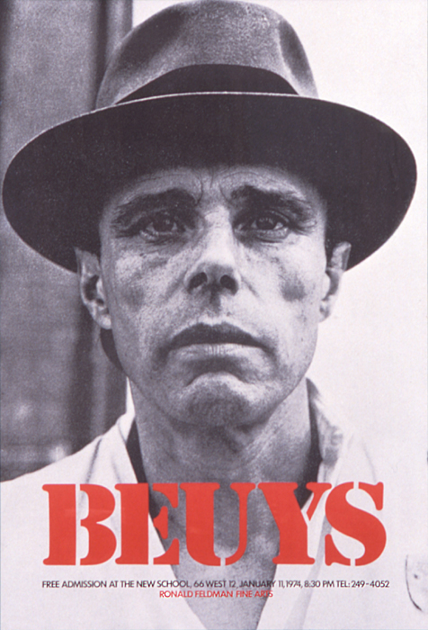 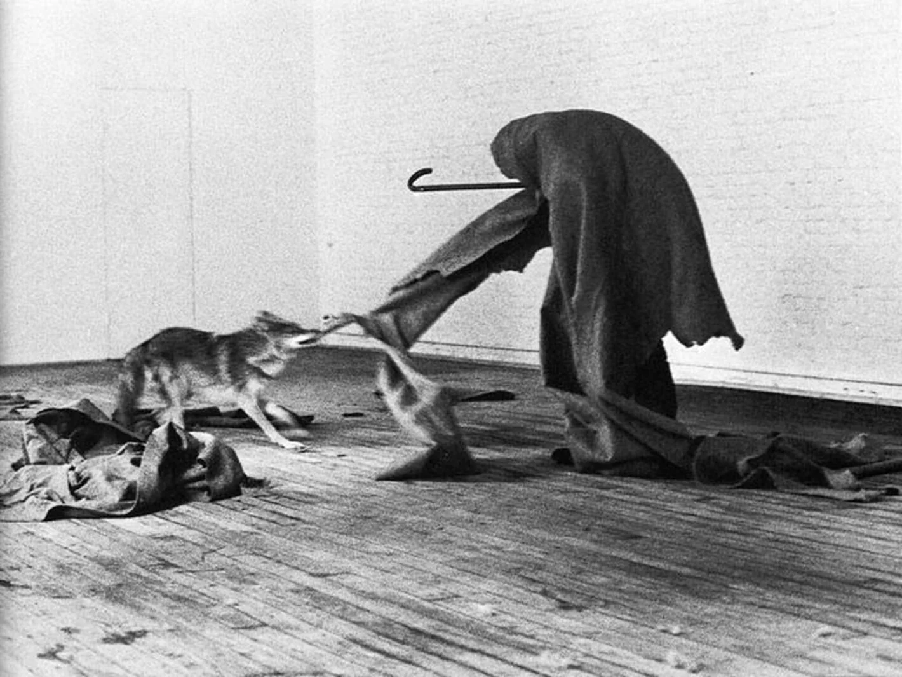
John Cage: Considerado um dos músicos mais influentes e criativos dos Estados Unidos do século XX, John Cage foi um dos precursores da arte performática ao explorar em seus espetáculos técnicas sonoras diferentes, com a da música aleatória.
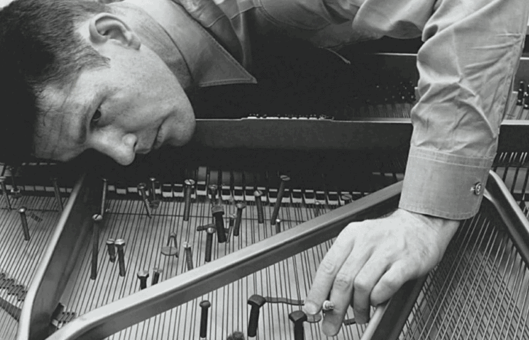 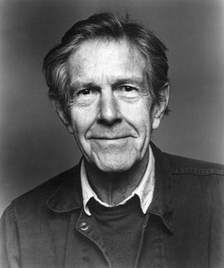
Allan Kaprow : Allan Kaprow criou o happening, uma vertente da performance artística, que inclui a participação do público.
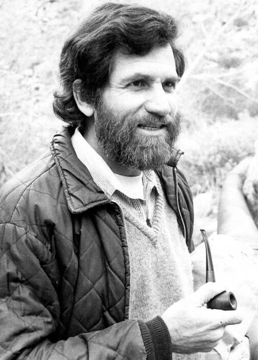 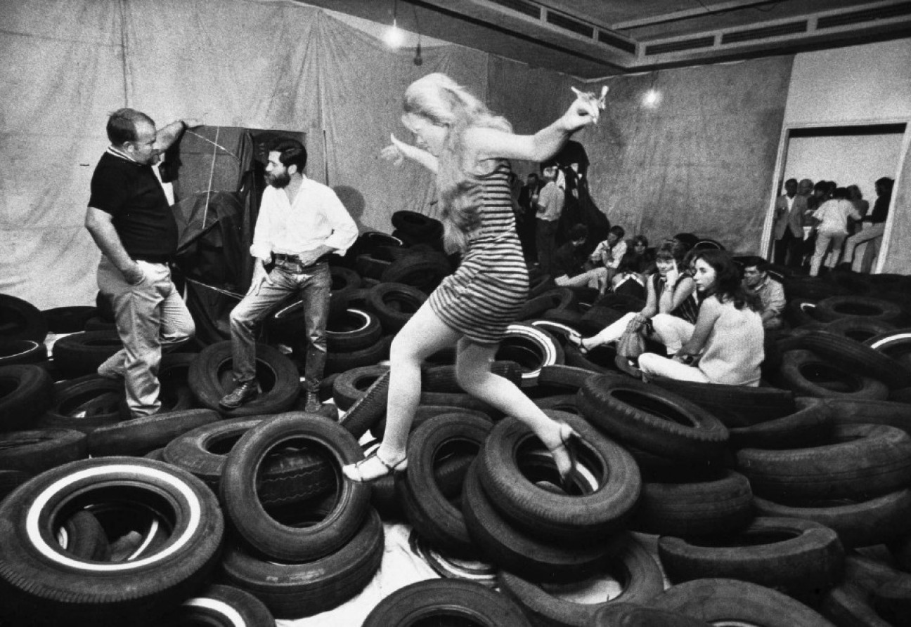
Flávio De Carvalho:é considerado um dos artistas de performance pioneiros em terras tupiniquins sendo provocativo e avesso aos padrões e às regras
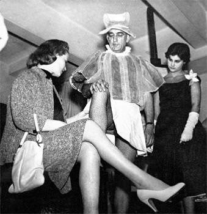 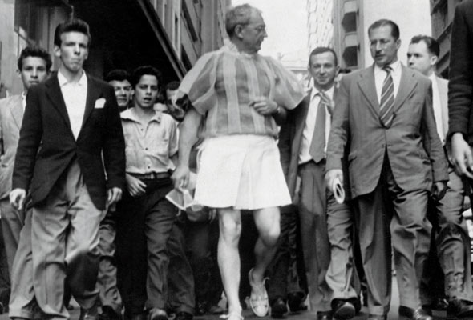
Nelson Leirner:Polêmico e controverso, o paulistano e criador do Grupo Rex, Nelson Leirner, questionou o aspecto comercial das obras de arte por meio de suas obras e apresentações artísticas.
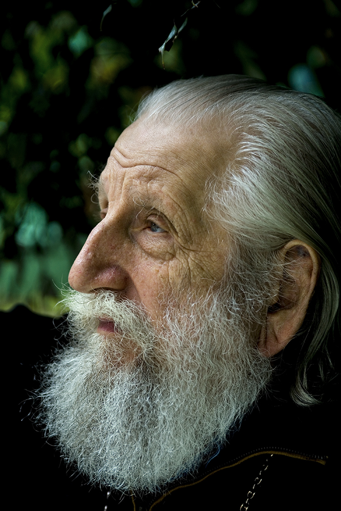 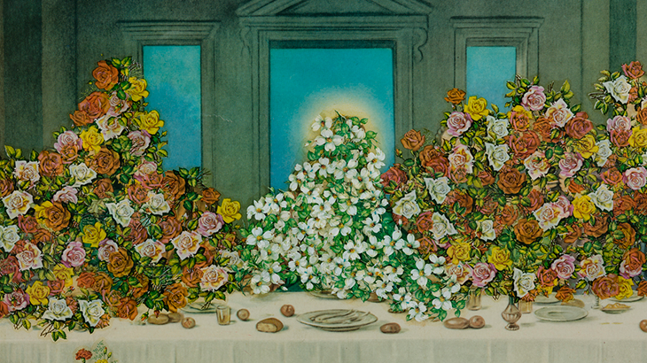
Marina Abramović: Pioneira da performance e da instalação, suas obras frequentemente envolvem o público de maneira intensa e pessoal, como em "The Artist Is Present."
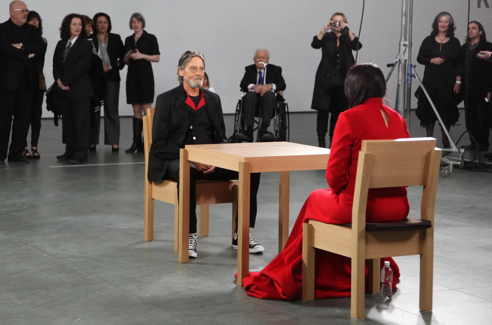